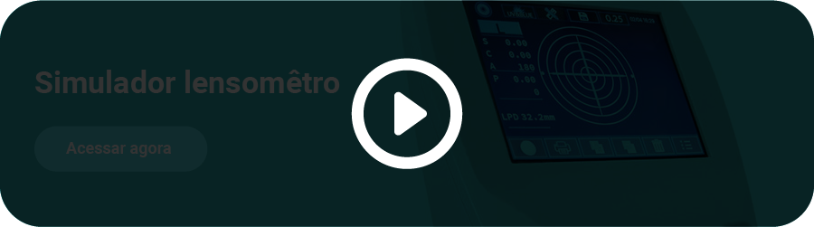
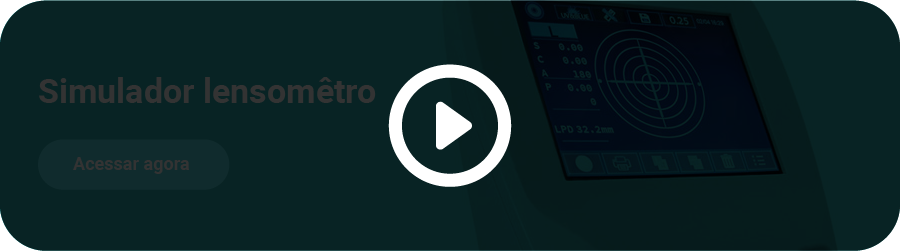

Neste conhecimento, você verá como é realizado o polimento e a desblocagem das lentes e, em seguida, realizará a conferência no lensômetro digital, ideal para uso em laboratórios, visto que atribui mais agilidade ao processo de conferência das lentes oftálmicas, quando comparado a um lensômetro manual.
Assista ao vídeo a seguir para ver como são realizados esses processos.
Neste material, você desenvolveu os conhecimentos sobre o acabamento e a conferência das lentes em relação a sua potência, espessura e polimento. Dessa forma, você concluiu todos os processos de surfaçagem de lentes visão simples esféricas e cilíndricas, centradas e descentradas.


 
